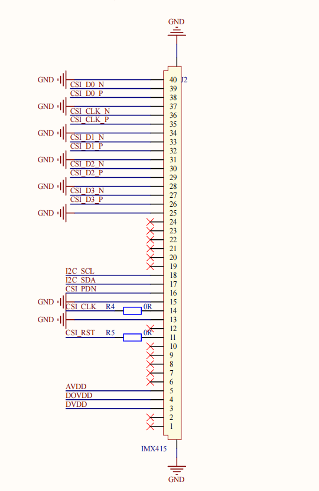
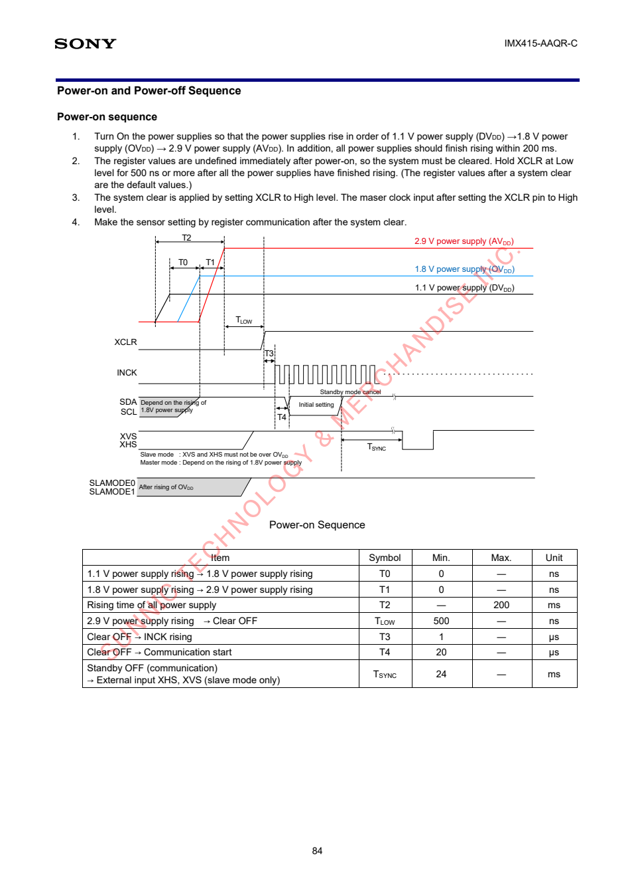

目标：用当前 RK3568 + IMX415 的真实原理图、DTS、内核源码和板端输出，解释 Sensor 如何从硬件连接变成 /dev/video0。
0. 一条主线
原理图
→ BoardConfig / DTS
→ I2C client：4-001a-1
→ compatible 匹配
→ imx415_probe()
→ V4L2 subdev
→ CSI-2 D-PHY / RKISP
→ /dev/video0本文按这条顺序阅读。每个结论至少对应一种证据：原理图位置、源码行号或板端输出。
1. 当前板型的源码入口
SDK：
/home/rk3568/work/rk3568_linux_sdk板级配置：
device/rockchip/rk356x/BoardConfig-rk3568-atk-evb1-ddr4-v10.mk其中指定：
RK_KERNEL_DTS=rk3568-atk-evb1-ddr4-v10-linux因此最终 DTS 是：
kernel/arch/arm64/boot/dts/rockchip/rk3568-atk-evb1-ddr4-v10-linux.dts它继续包含：
#include "rk3568-atk-evb1-ddr4-v10.dtsi"IMX415 的实际板级配置位于：
kernel/arch/arm64/boot/dts/rockchip/rk3568-atk-evb1-ddr4-v10.dtsi注意：源码中没有 rk3568-atk-evb1-ddr4-v10.dts，不要找错文件名。
2. 原理图到 DTS：硬件为什么这样配置
2.1 两份原理图的位置
| 对象 | 文件 | 重点位置 |
|---|---|---|
| RK3568 底板 | E:\【正点原子】RK3568开发板资料（A盘）-基础资料\02、开发板原理图\01、底板原理图\ATK-DLRK3568 V1.5(底板原理图).pdf | 第 4 页，右上角 MIPI CSI，连接器 J2 |
| IMX415 模组 | E:\【正点原子】RK3568开发板资料（A盘）-基础资料\02、开发板原理图\03、其它模块原理图\ATK-MCIMX415 V1.4 原理图.pdf | 第 2 页，中间 J3 和右侧 IMX415 |
主板 MIPI CSI 接口：

IMX415 Sensor 引脚：

2.2 唯一硬件映射表
| IMX415 模组信号 | 主板网络 | DTS 表达 | 驱动中的资源/用途 |
|---|---|---|---|
I2C_SCL/SDA | I2C4_SCL_M0/SDA_M0 | Sensor 节点放在 &i2c4 下 | I2C 寄存器读写 |
| I2C 地址 | 硬件地址 0x1a | reg = <0x1a> | client->addr = 0x1a |
CSI_RST | MIPICAM0_RST_L | reset-gpios = <&gpio3 RK_PB6 GPIO_ACTIVE_LOW> | reset_gpio |
CSI_PDN | CAMERA0_PDN_L | power-gpios = <&gpio4 RK_PB4 GPIO_ACTIVE_HIGH> | power_gpio |
| Sensor 输入时钟 | CIF_CLKOUT | clocks = <&cru CLK_CIF_OUT>、clock-names = "xvclk" | xvclk |
CSI_D0~D3 | MIPI CSI RX D0~D3 | data-lanes = <1 2 3 4> | 4 Lane MIPI 图像数据 |
CSI_CLK | MIPI Clock Lane | endpoint 连接 | MIPI 高速链路时钟 |
GPIO 的确认顺序是：
模组信号
→ 主板连接器网络名
→ RK3568 管脚
→ DTS GPIO 属性
→ imx415.c 获取资源它们不是在 DTS 中随意选择的。
2.3 电源与时钟的特殊点
IMX415 模组使用 VCC3.3，通过板载 LDO 生成：
VCC3.3
├── XC6206P282MR → AVDD ≈ 2.8V
├── XC6206P182MR → DOVDD ≈ 1.8V
└── XC6206P122MR → DVDD ≈ 1.2V因此当前 DTS 没有提供 avdd-supply、dovdd-supply、dvdd-supply。驱动退回 dummy regulator，但模组仍由板载 LDO 供电，所以这不是当前故障。
模组上的 24MHZ/NC 标记为不装，实际外部时钟由 RK3568 的 CIF_CLKOUT 提供。
2.4 Sony 芯片上电时序与 ATK 模组控制
[!important] 先记结论power-gpios只对应一根CSI_PDN控制线，不能分别控制DVDD、OVDD/DOVDD、AVDD三路电源，也不能把它直接等同于 Sony 上电时序图中的三条电源曲线。
Sony IMX415 Datasheet 第 84 页给出的是裸 Sensor 从完全断电到允许寄存器通信的电气时序，不是 RK3568 GPIO 调用时序，也不是 MIPI 图像传输时序。
原始资料：
E:\【正点原子】RK3568开发板资料（A盘）-基础资料
\07、硬件资料\06、模块资料
\【正点原子】ATK-MCIMX415摄像头模块
\2，IMX415参考资料
\IMX415-AAQR-C_Datasheet_E19504(产品信息).pdf
2.4.1 Sony 图中各信号代表什么
| Sony 图中的信号 | 含义 | 当前硬件/驱动中的对应对象 |
|---|---|---|
DVDD 1.1V | Sensor 数字内核电源 | 模组 DVDD≈1.2V，由 XC6206P122MR 产生 |
OVDD 1.8V | Sensor I/O 电源 | 模组 DOVDD≈1.8V，由 XC6206P182MR 产生 |
AVDD 2.9V | Sensor 模拟电源 | 模组 AVDD≈2.8V，由 XC6206P282MR 产生 |
XCLR | 低电平复位，高电平解除复位 | CSI_RST → reset-gpios → reset_gpio |
INCK | Sensor 外部主时钟 | CIF_CLKOUT → xvclk |
SDA/SCL | 寄存器通信 | I2C4_SDA/SCL |
CSI_PDN | Sony 图中没有这根同名信号 | ATK 模组级使能/掉电控制 → power-gpios |
Sony 图没有单独的 POWER 引脚。图顶部三条从 0V 上升到目标电压的曲线，本身就是电源状态变化。Sony 的 RESET 也不叫 RESET，而叫 XCLR：
XCLR = Low → 保持复位
XCLR = High → Clear OFF，解除复位2.4.2 Sony 规定的最低时间
DVDD 上升
→ OVDD 上升
→ AVDD 上升
→ XCLR 从 Low 变为 High
→ 输入 INCK
→ 开始 I2C 通信
→ 写初始化寄存器| 参数 | 含义 | 要求 |
|---|---|---|
T0 | DVDD 上升到 OVDD 上升 | ≥ 0ns，DVDD 不能晚于 OVDD |
T1 | OVDD 上升到 AVDD 上升 | ≥ 0ns，OVDD 不能晚于 AVDD |
T2 | 三路电源全部上升完成 | ≤ 200ms |
TLOW | AVDD 上升完成到 XCLR 解除 | ≥ 500ns |
T3 | XCLR 解除到 INCK 输入 | ≥ 1μs |
T4 | XCLR 解除到开始 I2C 通信 | ≥ 20μs |
2.4.3 当前模组为什么只有一个 power-gpios
当前 DTS：
reset-gpios = <&gpio3 RK_PB6 GPIO_ACTIVE_LOW>;
power-gpios = <&gpio4 RK_PB4 GPIO_ACTIVE_HIGH>;只描述两根 GPIO：
GPIO3_B6 → CSI_RST/XCLR → Sensor 复位
GPIO4_B4 → CSI_PDN → 模组级使能/掉电控制三路真实供电来自模组上的 VCC3.3 和三颗 LDO：
VCC3.3
├── XC6206P282MR → AVDD
├── XC6206P182MR → DOVDD
└── XC6206P122MR → DVDD三颗 LDO 没有独立的 EN 控制脚，因此 RK3568 不能通过一个 power_gpio 分别安排三路电源的先后顺序。ATK 规格书把 CSI_PDN 描述为“控制信号，使能模组电源”，但不能据此把它理解成 Sony 三路电源的独立时序控制器。
如果三路电源由 SoC 可控 regulator 提供，DTS 才会分别出现：
avdd-supply = <&vcc_camera_2v8>;
dovdd-supply = <&vcc_camera_1v8>;
dvdd-supply = <&vcc_camera_1v2>;当前 DTS 没有这三个属性，所以 regulator_bulk_enable() 操作的是 dummy regulator，不会改变真实电压。Sony 要求的三路电源上升过程由 VCC3.3、模组 LDO 及硬件特性负责，不是由 power_gpio 完成。
2.4.4 驱动代码实际执行的控制时序
__imx415_power_on() 执行的是 RK3568 能控制的模组级动作：
regulator_bulk_enable()
→ 当前为 dummy，对真实硬件无动作
power_gpio = 1
→ GPIO4_B4 物理高电平
→ CSI_PDN 进入模组使能状态
等待 10～20ms
reset_gpio = 0
→ 因为 GPIO_ACTIVE_LOW，逻辑 0 对应物理高电平
→ XCLR 从 Low 变 High，解除复位
等待 10～20ms
→ 设置并打开 xvclk/INCK
等待 20～30ms
→ 允许 I2C 读取 Sensor ID__imx415_power_off() 则反向处理：
reset_gpio = 1
→ 物理低电平，XCLR 复位有效
→ 关闭 xvclk
→ power_gpio = 0
→ 关闭模组级使能[!warning] 不要错误表述
不能说“power_gpio = 1按顺序打开了 DVDD、DOVDD、AVDD”。准确说法是：“模组三路真实电源由 VCC3.3 和板载 LDO 提供；驱动通过CSI_PDN、CSI_RST/XCLR和xvclk完成它能够控制的使能、复位与时钟时序。”
这也解释了为什么 Detected imx415 id 0000e0 能够出现：三路真实供电已经存在，驱动完成了模组使能、解除复位和时钟输入，随后 I2C 成功读取芯片 ID。但它仍不能证明 MIPI 已经输出图像。
3. IMX415 设备树节点
位置：
rk3568-atk-evb1-ddr4-v10.dtsi
&i2c4：约第 574 行
imx415：约第 650 行&i2c4 {
status = "okay";
imx415: imx415@1a {
status = "okay";
compatible = "sony,imx415";
reg = <0x1a>;
clocks = <&cru CLK_CIF_OUT>;
clock-names = "xvclk";
power-domains = <&power RK3568_PD_VI>;
pinctrl-names = "rockchip,camera_default";
pinctrl-0 = <&cif_clk>;
reset-gpios = <&gpio3 RK_PB6 GPIO_ACTIVE_LOW>;
power-gpios = <&gpio4 RK_PB4 GPIO_ACTIVE_HIGH>;
rockchip,camera-module-index = <0>;
rockchip,camera-module-facing = "back";
rockchip,camera-module-name = "CMK-OT1522-FG3";
rockchip,camera-module-lens-name = "CS-P1150-IRC-8M-FAU";
port {
imx415_out: endpoint {
remote-endpoint = <&mipi_in_ucam1>;
data-lanes = <1 2 3 4>;
};
};
};
};每组属性负责什么
| 属性组 | 作用 | 直接影响 |
|---|---|---|
status | 是否启用控制器和 Sensor 节点 | 是否创建设备 |
compatible | 与驱动 of_match_table 匹配 | 是否绑定 imx415 驱动 |
reg | I2C 从地址 | 创建地址为 0x1a 的 client |
clocks、pinctrl | 指定并复用 Sensor 外部时钟引脚 | MCLK |
power-domains | 使用 RK3568 VI 电源域 | SoC Camera/ISP 相关硬件域 |
reset-gpios、power-gpios | 描述板级控制线 | RESET、PDN/使能 |
camera-module-* | Rockchip 模组元数据 | subdev 名称、朝向、镜头信息 |
port/endpoint | 描述图像数据连向谁 | Sensor → CSI-2 D-PHY |
data-lanes | 指定 MIPI 数据 Lane | 4 Lane 接收配置 |
为什么整个节点写在 &i2c4 下面：
父节点描述“如何控制和配置 Sensor”——I2C4
port/endpoint 描述“图像数据发向哪里”——MIPI CSI-2这就是一颗 Sensor 同时使用两条通道：
I2C4 → 低速控制：读写寄存器、设置曝光/增益/模式、读取 Sensor ID
MIPI CSI-2 → 高速数据：传输 IMX415 输出的 RAW10 图像图像数据不会经过 I2C；port/endpoint 放在 I2C 设备节点中，只是为了完整描述这颗 Sensor 的数据连接。
4. 从 DTS 到 imx415_probe()
4.1 函数调用流程图
网页大图： 打开 IMX415 三层驱动调用流程
4.2 四个角色分别干什么
| 模块 | 大白话角色 | 它知道什么 | 它不负责什么 |
|---|---|---|---|
| Linux 通用驱动模型 | 管理员、调度中心 | 系统中有哪些 device、有哪些 driver、它们属于哪种总线 | 不懂 I2C 的 compatible 怎么比较，也不会操作 IMX415 寄存器 |
| I2C Core | I2C 专业中介、翻译员 | I2C 设备怎样创建、I2C 驱动怎样匹配、怎样把通用 device 转成 i2c_client | 不知道 IMX415 的具体上电时序和寄存器 |
i2c_client | IMX415 的设备档案 | I2C4、地址 0x1a，以及指向 DTS 节点的 dev.of_node | 它只是数据对象，不会主动匹配驱动或初始化硬件 |
| IMX415 驱动 | 真正干活的 Sensor 工程师 | IMX415 需要什么时钟、GPIO、寄存器和 ID | 不负责管理全系统的设备与驱动 |
I2C Core 是内核框架；i2c_client 是它根据 DTS 创建的设备对象，二者不是同一个东西。
4.3 注册、创建设备与匹配
先分清本轮最关键的疑问：
驱动是否注册 → 由内核配置和模块是否加载决定
匹配哪个驱动 → 由 i2c_client 关联的 DTS 信息和驱动匹配表决定不是 DTS 发现 IMX415 后，系统才选择注册 IMX415 驱动。所有已经编入内核或已经加载的 Sensor 驱动都会各自注册并等待设备；这里的“所有”只包括内核配置启用的驱动，不是源码目录中的全部驱动。
驱动注册和设备创建是两条独立路径，先后顺序不固定：
驱动路径 设备路径
CONFIG_VIDEO_IMX415=y DTS：&i2c4 / imx415@1a
→ sensor_mod_init() → 创建 i2c_client
→ 注册 imx415_i2c_driver → 保存 I2C4、0x1a、dev.of_node
\ /
\ /
→ compatible 匹配 ←
"sony,imx415"
↓
imx415_probe()第一步，IMX415 驱动先填写一张工作登记表：
static struct i2c_driver imx415_i2c_driver = {
.driver.of_match_table = imx415_of_match,
.probe = imx415_probe,
.remove = imx415_remove,
};它表达的是：
我能处理 compatible = "sony,imx415" 的设备；
设备交给我时，请调用 imx415_probe()；
设备解绑时，请调用 imx415_remove()。第二步，sensor_mod_init() 把登记表交给 I2C Core：
sensor_mod_init()
→ i2c_add_driver()
→ i2c_register_driver()I2C Core 给它盖章：
driver->driver.bus = &i2c_bus_type;意思是：“这是一个 I2C 驱动，以后使用 I2C 的匹配和 probe 规则。”
第三步，另一条路径根据 DTS 创建真实设备的软件代表：
imx415@1a
→ i2c_new_device()
→ struct i2c_client
→ 4-001a-1这个 client 同样标记为属于 i2c_bus_type。
第四步，Linux 通用驱动模型看到同一条 I2C 总线中已经同时存在：
设备：4-001a-1
驱动：imx415_i2c_driver但通用驱动模型不会比较 I2C 的 compatible，于是它问 I2C Core：
driver_match_device()
→ i2c_bus_type.match
→ i2c_device_match()第五步，I2C Core 比较：
DTS： sony,imx415
驱动表： sony,imx415匹配成功后，结果交回通用驱动模型。
第六步，通用驱动模型决定执行 probe，但它只认识通用的 struct device：
driver_probe_device()
→ really_probe()
→ i2c_bus_type.probe
→ i2c_device_probe(struct device *dev)第七步，I2C Core 充当翻译员：
通用 struct device
→ 转成 struct i2c_client
→ 找到 imx415_i2c_driver.probe然后执行：
driver->probe(client, i2c_match_id(driver->id_table, client));由于 driver->probe 保存的就是 imx415_probe，所以最终等价于：
imx415_probe(client, id);这时才轮到 IMX415 驱动真正操作硬件：获取时钟和 GPIO、上电、读取 0000e0、注册 V4L2 subdev。
4.4 为什么有两个 probe
i2c_bus_type.probe = i2c_device_probe这是 I2C Core 的通用入口，负责“翻译对象并转交任务”。
imx415_i2c_driver.probe = imx415_probe这是具体 Sensor 驱动入口，负责“真正初始化 IMX415”。
因此调用关系必须读成：
Linux 通用驱动模型
→ I2C Core 的 i2c_device_probe()
→ IMX415 驱动的 imx415_probe()4.5 compatible 如何匹配
DTS：
compatible = "sony,imx415";驱动：
static const struct of_device_id imx415_of_match[] = {
{ .compatible = "sony,imx415" },
{},
};两者相同，i2c_device_match() 才允许继续绑定。但这只是软件匹配，不证明真实硬件存在。
4.6 struct i2c_client 与信息来源
它代表内核中的一个 I2C 从设备实例：
client->adapter → I2C4
client->addr → 0x1a
client->dev.of_node → /i2c@fe5d0000/imx415@1a运行时目录：
/sys/bus/i2c/devices/4-001a-1其中 4 是 I2C adapter 编号，001a 是地址 0x1a。末尾 -1 属于当前 Rockchip 厂商驱动的实例命名部分，本阶段不依靠它判断总线或地址。
匹配和 probe() 使用的是同一个 DTS 节点，不是重新生成一份配置。I2C Core 把这个节点关联到 client，匹配成功后再把 client 传给驱动：
struct device *dev = &client->dev;
struct device_node *node = dev->of_node;| 角色 | 信息从哪里来 | 最终得到什么 |
|---|---|---|
| I2C Core | 解析 I2C4 下的 DTS 子节点 | 创建 i2c_client，组织匹配并转交 probe |
i2c_client | 由 I2C Core 根据 DTS 填充 | adapter=I2C4、addr=0x1a、dev.of_node→imx415@1a |
| IMX415 驱动 | 固定知识来自 imx415.c；板级信息通过 client 获取；真实 ID 通过 I2C 读取 | 寄存器表、模式、GPIO、时钟、电源以及实际 Sensor ID |
IMX415 驱动获得信息的入口：
client->adapter → 选择 I2C4
client->addr → 访问 0x1a
client->dev.of_node → 读取 GPIO、时钟、模组信息和 endpoint
imx415.c → 提供寄存器地址、模式表、预期 Sensor ID
真实 IMX415 → 通过 I2C 返回实际 Sensor ID5. endpoint：图像数据接到哪里
Sensor 输出端：
imx415_out: endpoint {
remote-endpoint = <&mipi_in_ucam1>;
data-lanes = <1 2 3 4>;
};CSI-2 D-PHY 两端位于同一个 .dtsi 约第 231～269 行：
&csi2_dphy0 {
ports {
port@0 {
mipi_in_ucam1: endpoint@2 {
remote-endpoint = <&imx415_out>;
data-lanes = <1 2 3 4>;
};
};
port@1 {
csidphy_out: endpoint@0 {
remote-endpoint = <&isp0_in>;
};
};
};
};| 概念 | 含义 |
|---|---|
port | 设备的一个数据接口 |
endpoint | 该接口上的具体连接端点 |
remote-endpoint | 对方 endpoint 的 phandle |
data-lanes | 使用哪些 MIPI 数据 Lane |
完整数据连接：
imx415_out
↔ mipi_in_ucam1
→ rockchip-csi2-dphy0
→ csidphy_out
↔ isp0_in
→ RKISP检查 endpoint 只看三点：
1. Sensor 与 D-PHY 输入端是否互相引用。
2. 两端 data-lanes 是否一致。
3. D-PHY 输出端是否连接 isp0_in。
endpoint 写错不会阻止 I2C 读取 Sensor ID，但会导致 Media Graph 无法形成完整图像链路。
6. imx415_probe()：真实硬件初始化
驱动文件：
kernel/drivers/media/i2c/imx415.c关键入口：
| 位置 | 内容 |
|---|---|
2429 | imx415_probe() |
2478 | 获取 xvclk |
2484 | 获取 reset GPIO |
2487 | 获取 power GPIO |
2507 | 获取 dvdd/dovdd/avdd |
2521 | __imx415_power_on() |
2525 | imx415_check_sensor_id() |
2551 | 注册异步 V4L2 subdev |
2598 | imx415_of_match[] |
2610 | imx415_i2c_driver |
2621 | sensor_mod_init() |
6.1 probe 的有效阅读顺序
| 顺序 | 动作 | 对应 DTS/硬件 |
|---|---|---|
| 1 | 读取模组编号、朝向、名称、镜头 | rockchip,camera-module-* |
| 2 | 选择 HDR/默认模式 | hdr-mode，缺省为非 HDR |
| 3 | 获取时钟、GPIO、pinctrl、regulator | MCLK、RESET、PDN、电源 |
| 4 | 初始化 V4L2 subdev 和 controls | 曝光、增益、VBlank 等 |
| 5 | __imx415_power_on() | 执行 GPIO、供电、MCLK 时序 |
| 6 | imx415_check_sensor_id() | 通过 I2C 读取芯片 ID |
| 7 | 初始化 Media Pad | Sensor 是 Source entity |
| 8 | 异步注册 V4L2 subdev | 等待 CSI/ISP 完成绑定 |
| 9 | 启用 Runtime PM，返回 0 | probe 完成 |
第一次阅读可以暂时跳过 devm_kzalloc、mutex、memset、snprintf 和错误清理标签；先吃透第 3～8 步。
6.2 日志和 sysfs 分别证明什么
| 板端证据 | 能证明什么 | 不能证明什么 |
|---|---|---|
| 运行时节点存在 | DTB 中启用了 imx415@1a | 硬件是否存在 |
/sys/bus/i2c/devices/4-001a-1 | I2C client 已创建 | Sensor 是否响应 |
DRIVER=imx415 | compatible 匹配并完成驱动绑定 | 芯片型号是否正确 |
Detected imx415 id 0000e0 | 已上电并通过真实 I2C 读到正确 ID | MIPI 是否已有图像 |
dphy0 matches m00_b_imx415 | D-PHY 找到 Sensor endpoint | RKISP 主路径是否可采集 |
Async subdev notifier completed | Sensor、CSI、ISP 异步绑定完成 | 实际帧内容是否正确 |
/dev/video0 可查询并抓帧 | V4L2 主路径可以提供数据 | 图像质量是否合格 |
板端真实证据：
OF_FULLNAME=/i2c@fe5d0000/imx415@1a
OF_COMPATIBLE_0=sony,imx415
DRIVER=imx415
imx415 4-001a-1: Detected imx415 id 0000e0
rkisp-vir0: Async subdev notifier completed必须区分：
compatible 匹配成功 ≠ 真实 Sensor 已响应
读到 Sensor ID ≠ MIPI 已经出图
Media Graph 完整 ≠ 图像内容一定正确7. 内核配置与 /dev/video0
IMX415 驱动的编译关系：
kernel/arch/arm64/configs/rockchip_linux_defconfig:347
CONFIG_VIDEO_IMX415=y
kernel/drivers/media/i2c/Kconfig:849
config VIDEO_IMX415
kernel/drivers/media/i2c/Makefile:166
obj-$(CONFIG_VIDEO_IMX415) += imx415.o三种配置状态：
CONFIG_VIDEO_IMX415=y
→ 编进内核
→ 开机执行初始化函数并注册驱动
CONFIG_VIDEO_IMX415=m
→ 编译为 imx415.ko
→ 模块加载后才注册驱动
# CONFIG_VIDEO_IMX415 is not set
→ 不参与编译
→ 系统中没有这个驱动当前 SDK 是 =y：IMX415 驱动在启动阶段独立注册，DTS 负责创建 i2c_client；两者之后再通过 compatible 匹配。
运行时 Media Graph：
m00_b_imx415
→ rockchip-csi2-dphy0
→ rkisp-csi-subdev
→ rkisp-isp-subdev
→ rkisp_mainpath
→ /dev/video0格式变化：
IMX415 输出 SGBRG10_1X10（RAW10）
→ RKISP 处理
→ /dev/video0 输出 NV12所以 /dev/video0 不是 Sensor 驱动单独创建的。Sensor 驱动注册的是 V4L2 subdev；RKISP 主路径注册视频采集节点。
8. 新板卡固定排查顺序
8.1 动手前必须拿到的资料
没有下面这些资料，不应该直接修改 DTS 或 Sensor 驱动：
- Sensor 型号、数据手册、模组原理图或接口定义。
- AVDD、DVDD、DOVDD 的电压和上电时序。
- MCLK 频率以及 RESET、PWDN/POWER 的有效电平。
- I2C 地址、寄存器地址宽度和芯片 ID 寄存器。
- MIPI Lane 数量、Lane 极性、时钟模式和 link frequency。
- 分辨率、帧率、RAW 位宽、Bayer 顺序和 HDR/线性模式。
- 模组是否带 EEPROM、VCM、Flash 或独立 PMIC。
还要确认板端接口确实匹配：
接口电压
→ MIPI Lane 数和接线
→ I2C 总线
→ MCLK 来源
→ RESET/PWDN 是否可控
→ 模组供电由谁提供8.2 bring-up 固定顺序
1. 原理图：确认电源、MCLK、RESET、PWDN、I2C 和 MIPI Lane。
2. BoardConfig：确认 RK_KERNEL_DTS。
3. DTS/DTSI：确认 I2C 节点、compatible、reg 和硬件资源。
4. I2C client：确认 /sys/bus/i2c/devices/<bus>-<addr>。
5. 驱动匹配：确认 DRIVER、of_match_table 和 probe 日志。
6. Sensor ID：确认真实 I2C 通信。
7. endpoint：确认 Sensor、D-PHY、ISP 双向连接。
8. Media Graph：确认 Sensor → CSI → ISP → mainpath。
9. V4L2：确认 /dev/videoX 的格式、分辨率、帧率和抓帧结果。
最终必须能按这个顺序回答：
硬件怎么接
→ DTS 为什么这样写
→ 哪个内核对象被创建
→ compatible 如何找到驱动
→ probe 如何验证真实 Sensor
→ endpoint 如何建立数据链路
→ 谁注册 /dev/video09. 岗位化面试复盘
本节用于把已经学过的内容转成面试表达，不阻塞第二章学习，也不提前提供标准答案。
请先保留自己的真实理解。不会的地方可以写“不懂”，回答后再补充高亮正确答案、当前板子证据和面试官追问。
第一轮：核心原理
问题 1｜两条初始化路径
开机过程中，DTS 中的 imx415@1a 和 CONFIG_VIDEO_IMX415=y 分别触发什么？
它们是不是严格按照下面的顺序串行执行？
先创建设备
→ 再注册驱动
→ 再匹配请用 i2c_client、i2c_driver、I2C 总线匹配和 probe 说明真实关系。
我的回答：
问题 2｜IMX415 驱动的信息从哪里来
imx415_probe(struct i2c_client *client, ...) 开始执行后，下面这些信息分别来自哪里？
I2C 总线号和地址
GPIO、时钟、模组名称和 endpoint
IMX415 寄存器地址、模式表和预期芯片 ID
真实 Sensor 返回的芯片 ID请说明 client->dev.of_node 在其中的作用，但不能只回答“都来自 DTS”。
我的回答：
问题 3｜probe 与真实硬件验证
请按有效阅读顺序介绍 imx415_probe()：
获取资源
→ 初始化 subdev/controls
→ 上电
→ 读取 Sensor ID
→ 注册 Media Entity 和 V4L2 subdev
→ Runtime PM还要回答：
- 为什么
compatible匹配成功不能证明真实 IMX415 存在？ - 为什么当前板子出现 dummy regulator 仍然能读到芯片 ID？
Detected imx415 id 0000e0能证明什么，不能证明什么？
我的回答：
问题 4｜控制流与图像数据流
为什么 IMX415 节点写在 &i2c4 下面，但图像数据并不经过 I2C？
请分别说明：
I2C4 / 0x1a
port / endpoint
MIPI CSI-2
V4L2 subdev在整个 Camera 链路中的职责。
我的回答：
第二轮：故障场景与项目表达
问题 5｜没有 I2C client
运行下面的命令，没有找到 4-001a-1：
ls -l /sys/bus/i2c/devices/这时为什么还不应该直接修改 imx415_probe()？请给出从 BoardConfig、运行时设备树到 I2C 控制器的检查顺序，以及每一步想证明什么。
我的回答：
问题 6｜已经绑定驱动，但读不到 Sensor ID
运行时已经能看到：
OF_COMPATIBLE_0=sony,imx415
DRIVER=imx415但是没有出现：
Detected imx415 id 0000e0这说明软件链路已经走到哪里？下一步应怎样检查 MCLK、RESET、PWDN/POWER、供电、I2C 地址和 I2C 波形？
请同时说明逻辑分析仪和示波器分别更适合检查哪些信号。
我的回答：
问题 7｜拿到新板子和新 Sensor
假设给你一块新 RK3568 板卡和一个新的 MIPI Sensor，要求独立完成 bring-up。请按实际工作顺序说明：
先从原理图确认什么
→ 内核已有 Sensor 驱动时修改什么
→ 内核没有驱动时还要增加什么
→ 怎样判断失败在设备创建、驱动匹配、真实 I2C 通信还是下游图像链路回答必须包含 BoardConfig、DTS/DTSI、Kconfig、Makefile、of_match_table、probe 和板端最小证据。
我的回答：
问题 8｜90 秒项目讲解
请用 60～90 秒向面试官介绍：
当前 RK3568 板卡是怎样从原理图和 DTS 描述 IMX415，怎样创建i2c_client、匹配imx415_i2c_driver、执行imx415_probe()，最后把 Sensor 注册成 V4L2 subdev 的？
表达顺序建议使用：
结论
→ 当前板子的硬件和 DTS
→ 设备创建与驱动注册两条起点
→ compatible 匹配与 probe
→ Chip ID 和 subdev 证据
→ 仍然不能证明的下游事项我的回答：